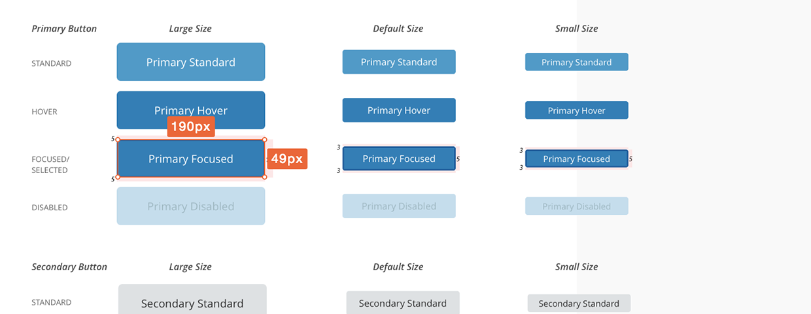

Introduction
Nextech, specializing in cloud-based EMR and PM SaaS applications for niche healthcare markets like Ophthalmology, Plastic Surgery, and Dermatology, offers a proprietary platform heavily customized for Plastic Surgery practice management.
Client: Nextech
Project: Web app design and branding
Role: Research and test, UX/UI Design
Tools: Axure, Sketch, InVision, Zeplin & Icomoon.
Problem
Nextech's SaaS app was increasingly facing usability challenges in terms of managing patient appointments in front office because of cumbersome and dispersed user experience.
Solution
With the product team, I redefined the user experience with over 30+ UX/UI improvements for check-in/out (including managing appointments) for front office users by collaborating with end users, pilot customers, stakeholders, and engineering.
Research + Ideate
Existing research showed that Plastic Surgery, Ophthalmology, and Dermatology had unique demands of users and customers. The research conducted was to validate the need for new features like streamlined appointment booking as well as redesign of existing ones like calendar UI.
• Expert Interview: Pilot users & supports
• Ideate: Design Studio w/ stakeholders
• Feature Concept Feedbacks from pilot users
• Prioritize UX/UI ideas into feature list
Interction Design + Test
Streamlined appointment booking
Version One (Top)
_Booking steps were initially in multiple screens.
_Users were required to save appt. to view day schedule.
_They also had to goto another screen to view other section.
Final Version (Bottom)
_Actions pages are condensed into single page.
_User can view the schedule while booking.
_They can also view patient related info. within the page.
• User Test with interactve wireframe
• Iterate and refine UX/UI concepts
• Prototype: https://tinyurl.com/49c54h7n
Visual Design + Validate
• Product branding
• Create design mockup
• Validate the design by user testing
• Revise and refine basedon feedback
• Prototype was with Invision app.
Brand Architecture
Iconography User Testing: Version One
Final Version
Implement
Styleguide
• Branding
• Color Palette
• Typography
• Iconography
• Grid System
• UI Elements
Create assets
Follow through QA process
